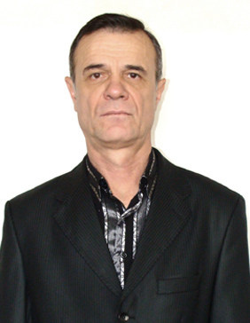

Пожидаев Александр Александрович

Ассистент, заведующий лабораториями.
Работает в Донецком политехническом институте с 1967 г. в должности препаратора кафедры электрических станций, а с 1969 г., когда была основана кафедра “Электроснабжения промышленных предприятий и городов” - препаратора кафедры ЭПГ. Закончил вечерний факультет Донецкого политехнического института по специальности “Электроснабжение промышленных предприятий и городов”. В 1972 г. был назначен заведующим лаборатории кафедры ЭПГ. С первого дня основания кафедры на Пожидаева А.А. была положена обязанность создания материально-технической базы кафедры и участие в разработке и монтаже лабораторных стендов по курсам дисциплин, которые преподаются на кафедре. Осуществлял контроль за строительством и монтажом подстанций института, быв членом штаба по строению 8 учебного корпуса. После переезда кафедры в новые помещения построенного корпуса в сжатый термин были смонтированы новые лаборатории, их оборудование, что привело к увеличению лабораторной базы кафедры в 4 раза. В разное время был членом институтских комиссий по охране труда и техники безопасности, главой комисии народного контроля. Принимал участие в выполнении научно-исследовательских работ кафедры, награжден серебряной медалью ВДНТ СССР.